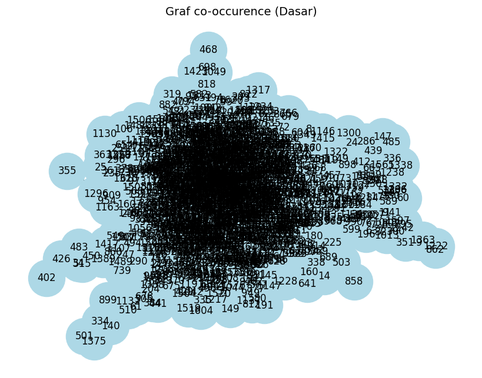
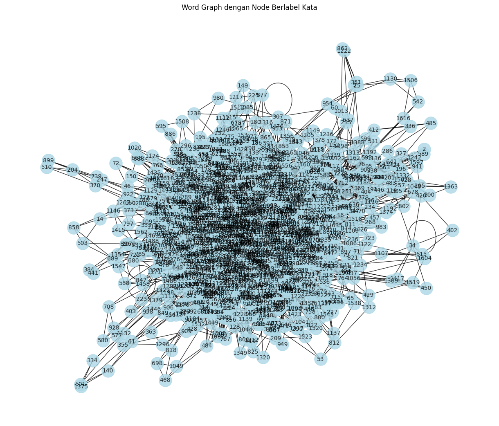

pip install --upgrade pymupdf
Collecting pymupdf
Downloading pymupdf-1.26.7-cp310-abi3-manylinux_2_28_x86_64.whl.metadata (3.4 kB)
Downloading pymupdf-1.26.7-cp310-abi3-manylinux_2_28_x86_64.whl (24.1 MB)
?25l ━━━━━━━━━━━━━━━━━━━━━━━━━━━━━━━━━━━━━━━━ 0.0/24.1 MB ? eta -:--:--
━━━━━━━━━━━━━━━━━━━━━━━━━━━━━━━━━━━━━━━╸ 23.9/24.1 MB 197.3 MB/s eta 0:00:01
━━━━━━━━━━━━━━━━━━━━━━━━━━━━━━━━━━━━━━━╸ 23.9/24.1 MB 197.3 MB/s eta 0:00:01
━━━━━━━━━━━━━━━━━━━━━━━━━━━━━━━━━━━━━━━━ 24.1/24.1 MB 51.9 MB/s 0:00:00
?25h
Installing collected packages: pymupdf
Successfully installed pymupdf-1.26.7
Note: you may need to restart the kernel to use updated packages.
from google.colab import drive
drive.mount('/content/drive')
---------------------------------------------------------------------------
ModuleNotFoundError Traceback (most recent call last)
Cell In[2], line 1
----> 1 from google.colab import drive
2 drive.mount('/content/drive')
ModuleNotFoundError: No module named 'google'
import pymupdf
doc = pymupdf.open("/content/drive/MyDrive/76_A+Stratified+Modeling-Machine+Learning+Approach+to+Improve+the+Accuracy+of+Non-Invasive+Blood+Glucose+Estimation+Using+Photoplethysmography+Signals.pdf") # open a document
out = open("output.txt", "wb") # create a text output
for page in doc: # iterate the document pages
text = page.get_text().encode("utf8") # get plain text (is in UTF-8)
out.write(text) # write text of page
out.write(bytes((12,))) # write page delimiter (form feed 0x0C)
out.close()
%%capture
!pip install nltk
import nltk
nltk.download('punkt') # hanya perlu sekali
nltk.download('punkt_tab') # opsional, untuk versi terbaru NLTK (≥3.8.2)
[nltk_data] Downloading package punkt to /root/nltk_data...
[nltk_data] Unzipping tokenizers/punkt.zip.
[nltk_data] Downloading package punkt_tab to /root/nltk_data...
[nltk_data] Unzipping tokenizers/punkt_tab.zip.
True
with open('output.txt', 'r', encoding='utf-8') as file:
teks = file.read()
print(teks[:200]) # tampilkan 200 karakter pertama
76
International Journal of Online and Biomedical Engineering (iJOE)
iJOE | Vol. 21 No. 6 (2025)
iJOE | eISSN: 2626-8493 | Vol. 21 No. 6 (2025) |
JOE
International Journal of
Online and Bio
# Install: pip install nltk
import nltk
#text = "Ini adalah kalimat pertama. Ini kalimat kedua? Ya!"
sentences = nltk.sent_tokenize(teks)
print(sentences)
# Output: ['Ini adalah kalimat pertama.', 'Ini kalimat kedua?', 'Ya!']
['\t\n76\t\nInternational Journal of Online and Biomedical Engineering (iJOE)\t\niJOE | Vol.', '21 No.', '6 (2025)\niJOE\u2002 |\u2002 eISSN: 2626-8493\u2002 |\u2002 Vol.', '21 No.', '6 (2025)\u2002 |\u2002\nJOE\nInternational Journal of \nOnline and Biomedical Engineering\nFitrilina, Rusydi, M.I., Kurnia, R., Windasari, N., Putra, R.Z.', '(2025).', 'A Stratified Modeling-Machine Learning Approach to Improve the Accuracy \nof Non-Invasive Blood Glucose Estimation Using Photoplethysmography Signals.', 'International Journal of Online and Biomedical Engineering (iJOE), \n21(6), pp.', '76–96.', 'https://doi.org/10.3991/ijoe.v21i06.53815\nArticle submitted 2024-12-12.', 'Revision uploaded 2025-01-30.', 'Final acceptance 2025-01-30.', '© 2025 by the authors of this article.', 'Published under CC-BY.', 'Online-Journals.org\nPAPER\nA Stratified Modeling-Machine Learning Approach \nto Improve the Accuracy of Non-Invasive Blood Glucose \nEstimation Using Photoplethysmography Signals\nABSTRACT\nDiabetes is a silent killer that can only be controlled with continuous monitoring of blood \nglucose levels.', 'The method commonly used is invasive and has various weaknesses, but it is \nmore accurate than non-invasive methods.', 'This research aims to develop a method to increase \nthe accuracy of non-invasive estimation of blood glucose levels using photoplethysmography \n(PPG) signals.', 'The proposed method is to carry out stratified modeling-machine learning.', 'The tested classifiers were support vector machines (SVM), KNN, Naïve Bayes, decision tree, \nand neural network.', 'The prediction model used simple linear, logarithmic, second-order \npolynomial, exponential, and power regression.', 'Applying stratified modeling using linear \nregression in the non-diabetes stratum and logarithmic regression in the diabetes stratum \nobtained a mean absolute relative difference (MARD) value of 4.5%, root mean square error \n(RMSE) of 18.9 mg/dl, Pearson correlation 0.985 and Clarke error grid analysis (CEGA) 96% in \nregion A and 4% in region B.', 'The implementation of stratification reveals a marked improve-\nment in efficacy, manifested as a reduction in the MARD by 77.83%, a decrease in the RMSE by \n51.91%, an enhancement in the Pearson correlation by 0.065, and a CEGA by 100% in regions \nA and B, thereby being clinically acceptable.', 'Implementing a stratified modeling-machine \nlearning approach can improve the accuracy of non-invasive blood glucose level estimates.', 'KEYWORDS\nblood glucose non-invasively, machine learning, photoplethysmography (PPG), classification, \nregression\n1 \nINTRODUCTION\nThe International Diabetes Federation (IDF) identifies diabetes as one of the top \nten causes of adult mortality.', 'In 2017, approximately 424.9 million adults (aged \n20–79 years) were diagnosed with diabetes, resulting in 4 million deaths and global \nFitrilina1,2, Muhammad \nIlhamdi Rusydi1(\uf02a), \nRahmadi Kurnia1, \nNoverika Windasari3, \nRaffi Zahrandhika Putra2\n1Department of Electrical \nEngineering, Faculty \nof Engineering, Universitas \nAndalas, Padang \nCity, Indonesia\n2Department of Electrical \nEngineering, Faculty \nof Engineering, Universitas \nBengkulu, Bengkulu \nCity, Indonesia\n3Department of Forensic \nand Legal Medicine, \nFaculty of Medicine, \nUniversitas Andalas, \nPadang City, Indonesia\nrusydi@eng.unand.ac.id\nhttps://doi.org/10.3991/ijoe.v21i06.53815\n\x0ciJOE | Vol.', '21 No.', '6 (2025)\t\nInternational Journal of Online and Biomedical Engineering (iJOE)\t\n77\nA Stratified Modeling-Machine Learning Approach to Improve the Accuracy of Non-Invasive Blood Glucose Estimation Using Photoplethysmography Signals\nhealthcare expenditures of USD 727 billion [1].', 'By 2019, these numbers increased \nto 463 million cases, 4.2 million deaths, and USD 760.3 billion in expenditures.', 'The global prevalence rose from 8.8% in 2017 to 9.3% in 2019, with projections indi-\ncating a continued upward trend.', 'In 2019, Indonesia ranked seventh globally and \nwas the only Southeast Asian country among the top ten nations with the highest \nnumber of diabetes cases in the 20–79 age group [1], [2], and [3].', 'Diabetes is a chronic disease [4], a metabolic disorder [5], [6], characterized by \nfluctuations in blood glucose levels [6], and is a lifelong disease [7].', 'Diabetes is char-\nacterized by impaired insulin production and utilization, leading to elevated blood \nglucose levels and affecting digestion [8].', 'Uncontrolled hyperglycemia, with glucose \nlevels above the euglycemic range [9], can cause severe damage to the heart, blood \nvessels, nerves, eyes, and kidneys [5], [6].', 'While hypoglycemia, in which glucose \nlevels fall below the euglycemic range [9], can cause seizures, coma, arrhythmias, \nand cardiac failure [6].', 'Effective diabetes management relies on continuous blood \nglucose monitoring.', 'Current methods are invasive or minimally invasive, requiring \npunctured blood samples, causing pain, discomfort, and high cost [10], [11].', 'This \nmethod uses a disposable test strip and places a drop of blood sample for analysis.', 'Blood glucose monitoring for patients with glycemic disorders can consume up to \n25% of their healthcare costs, primarily due to the high expense of glucose test strips, \nwhich dominate 85% of the global biosensor market [12].', 'Therefore, non-invasive \nmethods are crucial to addressing the limitations of invasive methods [13].', 'There are many studies, but no reliable and accurate method has been estab-\nlished [10], [11], [14], [15], and [16] which requires further improvement [10].', 'Non-\ninvasive blood glucose screening is categorized into optical and non-optical methods.', 'The optical properties of glucose are specific and show a superior correlation.', 'Thus, \noptical methods provide better results than non-optical methods [17].', 'Glucose con-\ncentration affects the scattering coefficient, thus allowing estimation through light \nintensity changes transmitted or reflected from glucose-containing tissues [6], [13].', 'A typical optical method used for measuring blood glucose concentration is pho-\ntoplethysmography (PPG) [3], [17], and [18].', 'PPG is a noninvasive methodology that \nmeasures blood volume by examining the intensity of light transmitted or reflected \nfrom human biological tissues [19].', 'Previous research has shown that this technique \ncan evaluate important physiological metrics such as blood pressure, heart rate, and \nrespiration while identifying diabetes [19].', 'Research into methods for non-invasive estimation of glucose levels has been exten-\nsively advanced.', 'The most rudimentary approach entails mathematical modeling, as \nevidenced in studies [4] and [10].', 'Research [20], [21] employs statistical methodologies.', 'The most widely utilized form of simple regression is linear regression [4], [6], [13], [21], \n[22], [23], and [24], alongside polynomial regression [7], [18], and [22].', 'Conventional \nmethods are widely utilized due to their inherent simplicity; nevertheless, the accu-\nracy and robustness of these methods require further refinement.', 'The machine learn-\ning techniques that are commonly employed include partial least squares (PLS) [20], \n[25]; random forest (RF) [26], [27], and [28]; ensembled boosted trees-SVR [29]; the \nensemble regression trees model [30]; and the ensemble bagging tree [3], in addition \nto ANN-based frameworks [12], [31]; support vector machines (SVM) [32]; FGSVR [33]; \nexponential Gaussian process machine learning regression [34]; Kernel-based regres-\nsion methods [35]; and multiple linear regression analysis [36].', 'Applying non-linear \nmachine learning methods yields superior estimation outcomes compared to linear \nmachine learning approaches [5].', 'This research focused on developing prediction \nmodels for blood glucose estimation using data from diabetic and non-diabetic sub-\njects.', 'The training process combines these datasets into a single model, introducing \nsignificant heterogeneity due to variations in PPG signal patterns between diabetic \n\x0c\t\n78\t\nInternational Journal of Online and Biomedical Engineering (iJOE)\t\niJOE | Vol.', '21 No.', '6 (2025)\nFitrilina et al.', 'and non-diabetic groups [3] and individual differences within each group [3], [37].', 'Therefore, combining diabetic data and non-diabetic data in one group of training \ndata sets will increase the heterogeneity of the data set.', 'Heterogeneity refers to the \nvariability present within data sets, requiring thorough examination to mitigate \npotential erroneous outcomes and conclusions [37], [38], and [39].', 'Data heterogeneity is a challenge in prediction or estimation models because data \nis very diverse, it is difficult to capture consistent patterns, and it is more complex [37], \n[40] because more factors must be considered, thus increasing estimation bias and \nreducing machine learning accuracy [37].', 'This study addresses these issues by pro-\nposing a noninvasive blood glucose estimation approach using homogeneous data \ngroups.', 'By aligning the model with the specific characteristics of the data, this approach \naims to reduce variability, enhance model precision, and simplify the decision- \nmaking process.', 'This study’s contribution lies in the implementation of stratified \nmodeling to estimate blood glucose levels noninvasively through the utilization \nof PPG signals in conjunction with machine learning methods.', 'This study aims to \nenhance the accuracy of the noninvasive measurement of blood glucose concen-\ntrations by implementing stratified modeling techniques.', 'This study will evaluate \nsystem accuracy with and without stratified modeling methods.', '2 \nMATERIALS AND METHODS\nThis study employs stratified modeling with machine learning to estimate blood \nglucose levels non-invasively, as shown in Figure 1.', 'Stratified modeling involves \ndeveloping separate models for distinct categorical features or parameter values [41].', 'Segmenting heterogeneous datasets into homogeneous clusters simplifies data dis-\ntribution and facilitates analysis using conventional methods [37].', 'Models built \nwithin these clusters better align with the data’s characteristics, reducing variabil-\nity and enhancing predictive accuracy.', 'The effectiveness of the stratified approach \nrelies heavily on selecting stratification features, effectively balancing the strengths \nof complex and simple models [41].', 'Proposed Methods\nPPG\nsignal\nTraining\nTesting\nClassification\nEstimation\nBlood glucose level\n(mg/dl)\nData Collection\nand Acquisition\nClassification\nSub Model 1\nSub Model 2\nSub Model N\nPredictive\nModel-1\nPredictive\nModel-2\nPredictive\nModel-N\nFig.', '1.', 'Stratified modelling process to estimate blood glucose concentration\n\x0ciJOE | Vol.', '21 No.', '6 (2025)\t\nInternational Journal of Online and Biomedical Engineering (iJOE)\t\n79\nA Stratified Modeling-Machine Learning Approach to Improve the Accuracy of Non-Invasive Blood Glucose Estimation Using Photoplethysmography Signals\nThis study utilized diabetes and non-diabetes as stratification parameters, \nemploying a machine learning classifier to categorize the data.', 'Separate predictive \nmodels were developed for each stratum.', 'During training, the classifier was trained \nto distinguish between diabetic and non-diabetic data while simultaneously build-\ning predictive models specific to each category.', 'In testing, PPG signals were classi-\nfied as diabetic or non-diabetic, and blood glucose concentrations were estimated \nusing the corresponding predictive model.', 'The research workflow is summarized \nin Figure 2.', 'Fig.', '2.', 'Flowchart of research stages with a stratified modelling approach\n\x0c\t\n80\t\nInternational Journal of Online and Biomedical Engineering (iJOE)\t\niJOE | Vol.', '21 No.', '6 (2025)\nFitrilina et al.', '2.1 \nHardware design\nTwo sensor positioning modes can be employed: the transmission mode \n(see Figure 3a) and the reflectance mode (see Figure 3b).', 'a)\nb)\nFig.', '3.', 'Sensor mode: a) Transmission, b) Reflectance [18]\nThis study utilized the transmission mode.', 'Near-infrared light-emitting diodes \n(NIR-LEDs) operating at 940 nm emit light that is absorbed and converted into \nvoltage signals by the OPT101.', 'The wavelength of 940 nm is selected due to its \nhigh sensitivity to glucose molecules in the bloodstream [4], [6], and [16].', 'The PPG \nsignals were acquired using the OPT101 sensor.', 'The OPT101 was chosen for its \nhigh sensitivity and ability to minimize interference from environmental light \nor scattering effects [42].', 'Its integrated photodiode detects light intensity, which \nis converted into a current output.', 'The trans-impedance amplifier (TIA) within \nthe OPT101 amplifies this current and converts it into a proportional voltage \noutput, directly correlating with blood glucose concentration [43].', 'No additional \npreprocessing techniques, such as filtering or noise reduction, were applied, rely-\ning instead on the sensor’s ability to minimize interference from environmental \nlight and signal artifacts.', 'The raw signal was directly used for further analysis \nand modelling.', 'The analog voltage is processed by the ESP32 to be converted to an \nADC value.', '2.2 \nData collection and acquisitions\nPhotoplethysmography signals were recorded over 20 seconds at a sampling \nfrequency of 100 Hz.', 'The analog voltage was converted into ADC values ranging \nfrom 0 to 1023 (10-bit resolution).', 'The data set consists of sensor voltage outputs \n(ADC value), subject ages, and blood glucose concentrations (mg/dL) obtained from \nan invasive glucometer (Accu-Chek).', 'PPG signals were labeled as non-diabetes or \ndiabetic based on the 2019 National Institute for Clinical Excellence (NICE) guide-\nlines, as detailed in Table 1.', 'Table 1.', 'Blood glucose level of nice 2019 [3]\nPlasma Glucose Test\nNon-Diabetes\nPrediabetes\nDiabetes\nRandom\n<200 mg/dl or \n<11,1 mmol/L\nN/A\n>200 mg/dl or \n>11,1 mmol/L\nFasting\n<100 mg/dl or \n<5,5 mmol/L\n100–125 mg/dl or \n5,5–6,9 mmol/L\n>126 mg/dl or \n7 mmol/L\n\x0ciJOE | Vol.', '21 No.', '6 (2025)\t\nInternational Journal of Online and Biomedical Engineering (iJOE)\t\n81\nA Stratified Modeling-Machine Learning Approach to Improve the Accuracy of Non-Invasive Blood Glucose Estimation Using Photoplethysmography Signals\nRandom plasma glucose assessments may be performed at any time without the \nnecessity for preparatory measures [3].', 'Conversely, the fasting plasma glucose eval-\nuation is conducted following a minimum fasting period of eight hours [3].', 'This \nresearch employed a random testing methodology.', 'The study analyzed 200 training \ndatasets comprising 100 non-diabetes and 100 diabetic samples and 50 testing data \nsets comprising 25 non-diabetes and 25 diabetic samples.', 'This study received ethical \napproval from the Ethics Committee of the Faculty of Medicine, Universitas Andalas, \nwith approval number 519/UN.16.2/KEP-FK/2024.', '2.3 \nClassification\nClassification was performed to categorize PPG signals into non-diabetes or \ndiabetic strata.', 'The classified ADC voltage values were then converted to blood \nglucose levels (mg/dL) using the corresponding regression model.', 'Recently, \nmachine learning methods are widely used in the medical field for the detec-\ntion, diagnosis, and classification of diseases [44].', 'All models tested are shown \nin Figure 4.', 'Fig.', '4.', 'Classifier tested\nThe validation process in this study employs both resubstitution and five-fold \ncross-validation techniques to evaluate model performance.', 'Resubstitution vali-\ndation provides an initial assessment of how well the model fits the training data, \nwhile five-fold cross-validation ensures robustness by partitioning the dataset into \nfive subsets, using one subset for testing and the remaining for training iteratively.', 'This approach minimizes overfitting and provides a more reliable estimate of the \nmodel’s generalization capability.', '2.4 \nEstimation\nThis study employs simple regression methods: linear, second-order polynomial, \nexponential, logarithmic, and power models.', 'In this approach, the ADC value is the \n\x0c\t\n82\t\nInternational Journal of Online and Biomedical Engineering (iJOE)\t\niJOE | Vol.', '21 No.', '6 (2025)\nFitrilina et al.', 'independent variable (X), and the invasive blood glucose measurement from the \nACCU-CHECK glucometer is the dependent variable (Y).', 'The efficacy of these estima-\ntion models was evaluated based on the following criteria:\n1.', 'Mean absolute relative difference (MARD): Mean absolute relative difference is a \nprevalent criterion utilized for assessing glucose monitoring methods [28], [31].', 'It quantifies the relative difference between a non-invasive device’s predicted \nvalues and an invasive device’s reference values [28], [31].', 'MARD is calculated \nusing equation (1) [33].', 'MARD\nn\nX\nY\nY\ni\nn\ni\ni\ni\n\x1f\n\x1e\n\x1f\n1\n100\n1\x1d\n\x1c\n(\n)\n\x1b \x1b\n\x1b% \t\n(1)\n2.', 'Root mean square error (RMSE): Root mean square error measures the devia-\ntion between predicted and actual values, reflecting the standard deviation of \nresiduals [28], [31].', 'It is calculated using equation (2) [28].', 'RMSE\nX\nY\nn\ni\nn\ni\ni\n\x1f\n\x1e\n\x1f1\n2\n\x1d\n(\n)\n\t\n(2)\n \n\u2003x denotes the predicted value non-invasively, y represents the reference value \ninvasively, and n indicates the number of samples.', '3.', 'Pearson correlation (R): Correlation coefficient (R) describes the strength of the \nrelationship [45].', 'This study uses Pearson correlation to analyze the relationship \nbetween the estimated blood glucose values from the regression model and the \nreference values measured by an invasive glucometer.', '4.', 'Clark error grid analysis (CEG): Clarke error grid analysis (CEGA) is a standard \nmethod for assessing the clinical accuracy of self-monitoring of blood glucose \n(SMBG) devices [46].', 'Region A is clinically accurate decisions (deviation of ±20% \nfrom the actual values) [47]; Region B is clinically acceptable and uncritical \ndecisions; Region C is overcorrections that could lead to an adverse outcome; \nRegion D is dangerous failure to detect and treat; and Region E is erroneous \ntreatment [48].', '3 \nRESULTS AND DISCUSSION\n3.1 \nData acquisition and analysis\nThe dataset in this study, while demonstrating the methodology’s efficacy \nwith participants from Bengkulu City, Indonesia (93 male and 107 female, aged \n18–71 years), does not include key demographic variables such as ethnicity, body \nmass, and pre-existing conditions.', 'Although this limits generalizability to diverse \npopulations, the primary objective was to evaluate the effectiveness of a stratified \nmodelling approach for improving non-invasive glucose estimation, which was \nsuccessfully achieved within this context.', 'Future research should build on these \nfindings by incorporating more diverse datasets with broader demographic and \nphysiological factors to enhance the model’s robustness and ensure clinical util-\nity across varied populations.', 'Figure 5 shows the data set distribution used in \n\x0ciJOE | Vol.', '21 No.', '6 (2025)\t\nInternational Journal of Online and Biomedical Engineering (iJOE)\t\n83\nA Stratified Modeling-Machine Learning Approach to Improve the Accuracy of Non-Invasive Blood Glucose Estimation Using Photoplethysmography Signals\nthe training phase.', 'The ADC value data and the age of the subjects can be seen in \nFigure 5a.', 'The distribution of the output voltage value of the OPT101 sensor (in ADC \nunits) corresponding to the blood glucose level measured by the Accu-Chek device \nis illustrated in Figure 5b.', 'a) Two features\nb) One feature\nFig.', '5.', 'Distribution of ADC value in training data\nFigure 5b shows an inverse correlation between sensor voltage and blood \nglucose concentration, where an increase in glucose levels leads to a decrease \nin sensor voltage.', 'This finding aligns with previous studies [49], suggesting that \nhigher glucose concentrations raise the attenuation coefficient, causing greater \nlight absorption and less scattering in the blood [50].', 'Consequently, less light is \ncaptured by the sensor, reducing the PPG signal amplitude and sensor voltage \n[13] [51].', 'Figure 5b shows distinct distribution patterns of ADC values and blood \nglucose levels between non-diabetes and diabetic individuals.', 'The non-diabetes \ncategory exhibits a more linear distribution compared to the diabetic category.', 'As \na result, using a single predictive model, such as a linear regression equation, for \nall subjects is likely to introduce significant estimation bias, negatively affecting \nmodel accuracy [37].', 'To reduce this bias and improve accuracy, we propose devel-\noping separate predictive models for each category, non-diabetes and diabetic, \nthrough stratified modeling.', 'This approach classifies subjects based on their PPG \nsignals using various machine learning methods, followed by applying regression \ntechniques for each group.', '3.2 \nClassification results\nThe proposed method begins with a classification phase that distinguishes PPG \nsignals into diabetic and non-diabetic categories.', 'This step is crucial, as grouping \nthe PPG signals enables more accurate subsequent estimations using an appro-\npriate predictive model, reducing bias and improving precision.', 'The testing \ndataset includes 50 samples (25 diabetic and 25 non-diabetic), with two classifi-\ncation schemes: one using both ADC value and age and the other using only the \nADC value.', 'This design evaluates whether age affects the classification or if the \nADC value is the primary factor.', 'Classification accuracy results are summarized \nin Table 2.', '84\t\nInternational Journal of Online and Biomedical Engineering (iJOE)\t\niJOE | Vol.', '21 No.', '6 (2025)\nFitrilina et al.', 'Table 2.', 'Percentage accuracy of the classification process\nMethod\nUsing ADC Voltage and Age Features\nUsing ADC Voltage \nFeatures and 5-Fold \nCross-Validation\nResubstitution \nValidation\n5-Fold\nCross Validation\nTraining\nTesting\nTraining\nTesting\nTraining\nTesting\nSVM:\nLinear\n98.5\n100\n97.5\n100\n95\n98\nQuadratic\n99.5\n100\n99\n100\n97.5\n100\nCubic\n99.5\n100\n98.5\n100\n97.5\n100\nFine Gaussian\n99.5\n100\n97.5\n100\n96.5\n100\nMedium Gaussian\n99\n100\n98.5\n100\n95\n100\nCoarse Gaussian\n97\n100\n97\n100\n95\n100\nKNN:\nFine\n100\n100\n97.5\n100\n99.5\n100\nMedium\n98.5\n100\n97.5\n100\n97.5\n100\nCoarse\n97\n100\n97\n100\n93.5\n94\nCosine\n98.5\n100\n97\n100\n93.5\n94\nCubic\n98.5\n100\n97.5\n100\n97.5\n100\nWeighted\n100\n100\n98\n100\n99.5\n100\nNaïve Bayes:\nGaussian\n97.5\n100\n97\n100\n95\n100\nKernel\n99\n100\n99\n100\n95\n98\nDecision Trees:\nFine\n99.5\n100\n98.5\n100\n98\n100\nMedium\n99.5\n100\n98.5\n100\n98\n100\nCoarse\n99.5\n100\n98.5\n100\n98.5\n100\nNeural Network:\nNarrow\n100\n100\n99.5\n100\n97\n100\nMedium\n100\n100\n99.5\n100\n97\n100\nWide\n100\n100\n99.5\n100\n99.5\n100\nBi-layered\n100\n100\n99\n100\n99\n100\nTri-layered\n100\n100\n99.5\n100\n98\n100\nThe classification results demonstrate that wide neural networks consistently out-\nperformed other methods, achieving 100% accuracy in testing across all validation \nsetups, highlighting its robustness.', 'Models incorporating ADC voltage and age fea-\ntures showed significantly better performance than those using ADC voltage alone, \nunderscoring the importance of combining signal-based and demographic data.', 'Weighted KNN and quadratic SVM also delivered high accuracy, with performance \n\x0ciJOE | Vol.', '21 No.', '6 (2025)\t\nInternational Journal of Online and Biomedical Engineering (iJOE)\t\n85\nA Stratified Modeling-Machine Learning Approach to Improve the Accuracy of Non-Invasive Blood Glucose Estimation Using Photoplethysmography Signals\nranging from 97.5% to 100%, while fine and medium decision trees proved reliable, \nachieving accuracy between 98% and 99.5%.', 'Kernel Naïve Bayes showed strong \nresults with 99% accuracy, outperforming its Gaussian variant.', 'However, models \nusing only ADC voltage showed limitations, particularly in KNN and SVM variants, \nreflecting the value of richer feature sets.', 'These findings establish wide neural \nnetworks as the most robust approach, with feature selection playing a critical role \nin optimizing classification accuracy.', 'In this research, the classification process focuses on categorizing ADC values \nfrom PPG signals into diabetic or non-diabetic strata based on the 2019 NICE guide-\nlines rather than diagnosing individuals as diabetic or non-diabetic.', 'In contrast, \nprevious studies on diabetes detection are summarized in Table 3.', 'Table 3.', 'Related work\nAuthors\nMethod\nFeature\nAccuracy\nReddy et al.', '[52]\nSVM\nHRV\n82%\nNirala et al.', '[53]\nSVM\nSignal and derivatives + eigen value\n97.87%\nHettiarachchi et al.', '[54]\nLDA\nSignal feature + Physio data\n83%\nQawqzeh et al.', '[55]\nLogistic Regression\nSignal feature + Physio data\n92.30%\nPrabha et al.', '[56]\nSVM\nMFCC + Physio data\n92.28%\nChu et al.', '[57]\nLogistic Regression\nHRV + Physio data\n90%\nSusana et al.', '[3]\nEnsemble Bagging Trees\n2100 sample points\n98%\nTable 3 highlights previous studies that aimed to detect diabetes using various \nfeatures of PPG signals, reporting high accuracies ranging from 82% to 98%.', 'This \nstudy focuses on classifying the average voltage value of the PPG signal into diabetic \nand non-diabetic groups, a feature not explored in previous studies listed in Table 3.', 'The average voltage of the PPG signal correlates with optical light intensity, which \nreflects glucose concentration in the blood.', 'While the current approach demon-\nstrates promising potential, exploring additional features in future research could \nfurther enhance classification performance and support direct diabetes detection.', 'Diabetes mellitus is a chronic condition characterized by excessive glucose accu-\nmulation in the bloodstream [58].', 'A key complication of diabetes is autonomic ner-\nvous system (ANS) dysfunction, which significantly affects heart rate variability \n(HRV).', 'Disruptions in glucose metabolism reduce parasympathetic and sympa-\nthetic activity, measurable through PPG morphology and HRV analysis [4].', 'In type 2 \ndiabetes, arterial stiffness is a significant characteristic, impacting the differentia-\ntion between diabetic and non-diabetes conditions [58].', 'Factors such as arterial wall \nrigidity, viscosity, and cardiac depolarization affect the PPG waveform, suggesting \ndiabetes may be detected through PPG signal analysis [59].', '3.3 \nEstimation results\nLinear regression for combined dataset.', 'Figure 6 displays a linear regres-\nsion graph illustrating the relationship between ADC values and instant blood glu-\ncose levels based on the analysis of the combined data (200 samples).', 'The resulting \nregression equation is Y = -0,5947X + 341,36 with a determination coefficient of \n\x0c\t\n86\t\nInternational Journal of Online and Biomedical Engineering (iJOE)\t\niJOE | Vol.', '21 No.', '6 (2025)\nFitrilina et al.', '0.8348, which indicates a strong relationship between the ADC value and invasive \nblood glucose level.', 'y = –0,5947x + 341,36\nR² = 0,8348\n0\n50\n100\n150\n200\n250\n300\n350\n400\n450\n500\n0\n100\n200\n300\n400\n500\n600\n700\nInvasive Blood Glucose Level mg/dl\nADC Value\nFig.', '6.', 'Linear regression curve without stratification\nThe correlation coefficient between ADC values and glucose concentration is \n0.91, indicating a very high correlation [42].', 'The coefficient of determination (R2) \nreveals that the ADC value explains 83.48% of the variance in blood glucose levels.', 'This regression model predicted non-invasive blood glucose levels on a training \ndataset of 200 samples and a testing dataset of 50 samples.', 'The model’s perfor-\nmance, evaluated using MARD, RMSE, and Pearson correlation, is summarized \nin Table 4.', 'Table 4.', 'Estimation performance without stratification\nGroup\nRegression\nMARD (%)\nRMSE (mg/dl)\nPearson Correlation\nDiabetes\nSimple linear regression:\ny = -0.5947x + 341.36\nR2 = 0.8348\n9.7\n40.1\n0.88\nNon diabetes\n34.3\n46.2\n0.98\nOverall Data\n20.3\n39.3\n0.92\nLinear regression for stratified modeling.', 'The selection of diabetic and \nnon-diabetic as stratification parameters is based on the distinct physiological \nand PPG signal differences between these groups.', 'Diabetes alters arterial stiff-\nness, blood viscosity, and tissue reflectance, resulting in significant signal vari-\nability.', 'Combining these heterogeneous datasets into a single model increases \nestimation bias and reduces predictive accuracy.', 'Stratification addresses this by \ncreating homogeneous subsets, improving model alignment with group-specific \ncharacteristics, and enhancing accuracy.', 'Linear regression analysis was per-\nformed separately for the diabetic and non-diabetic strata.', 'Figure 7a illustrates \nthe linear relationship for the diabetic stratum, while Figure 7b represents the \nnon-diabetic stratum.', 'iJOE | Vol.', '21 No.', '6 (2025)\t\nInternational Journal of Online and Biomedical Engineering (iJOE)\t\n87\nA Stratified Modeling-Machine Learning Approach to Improve the Accuracy of Non-Invasive Blood Glucose Estimation Using Photoplethysmography Signals\na) Diabetes stratum\nb) Non-diabetes stratum\ny = –0.9693x + 381.66\nR² = 0.7829\n0\n100\n200\n300\n400\n500\n0\n100\n200\n300\nInvasive blood\nglucose (Mg/dl)\nADC value \ny = –0.1539x + 165.74\nR² = 0.9708\n0\n50\n100\n150\n200\n0\n200\n400\n600\n800\nInvasive blood\nglucose mg/dl\nADC value\nFig.', '7.', 'Linear regression curve with stratification\nThe linear regression model shows a correlation coefficient (R) of 0.88 for the dia-\nbetes stratum and 0.98 for the non-diabetes stratum.', 'The diabetes stratum exhibits \na high correlation [45], with the ADC value explaining 78.29% of the variability in \ninvasive blood glucose levels, leaving 21.71% due to other factors [45].', 'In contrast, \nthe non-diabetes stratum demonstrates a very high correlation [45], with 97.08% of \nblood glucose variability explained by the ADC value and 2.92% due to other factors.', 'Unexplained variability or other factors that influence the results can arise from \nphysiological factors of diabetic and normal subjects [3] (skin thickness variation, \nskin color variation, muscle thickness variation and tissue reflectance, heart rate or \ncardiac cycle phase, blood pressure, blood volume, aging [59], and blood circulation \n[60]), technical factors (such as sensor quality, sensor noise, and ADC resolution), or \nenvironmental factors (such as temperature and humidity, motion artifacts).', 'These findings demonstrate a strong linear relationship between ADC values and \nblood glucose levels, establishing ADC as a reliable predictor.', 'The lower coefficient \nof determination in the diabetes stratum indicates that factors beyond PPG signal \nvoltage significantly influence glucose levels in diabetic individuals.', 'Stratifying \nthe prediction models for non-diabetes and diabetes groups improves accuracy, \nwith linear regression proving effective for the non-diabetes stratum.', 'However, \nthe diabetes stratum requires further model refinement.', 'To address this, the study \nevaluates regression models—linear, logarithmic, polynomial, exponential, and \npower—within each stratum, assessing their performance using MARD, RMSE, and \nPearson correlation, as summarized in Table 5.', 'Table 5.', 'Estimation performance with stratification\nStrata\nRegression\nMARD (%)\nRMSE (mg/dl)\nPearson Corr\nDiabetes\nLinear:\ny = -0.9693x + 381.66\nR2 = 0.7829\n8.3\n31.6\n0.88\nLogarithmic:\ny = -52.51ln(x) + 503.96\nR2 = 0.8474\n7.5\n26.5\n0.92\nA Second – order – Polynomial:\ny = 0.0052x2 - 1.8851x + 399.59\nR2 = 0.8259\n7.4\n27.9\n0.91\nExponential:\ny = 383.89e - 0.003x\nR2 = 0.8052\n8.7\n30.9\n0.89\nPower:\ny = 566.86x - 0.171\nR2 = 0.8359\n8\n28.0\n0.91\n(Continued)\n\x0c\t\n88\t\nInternational Journal of Online and Biomedical Engineering (iJOE)\t\niJOE | Vol.', '21 No.', '6 (2025)\nFitrilina et al.', 'Strata\nRegression\nMARD (%)\nRMSE (mg/dl)\nPearson Corr\nNon-diabetes\nLinear:\ny = -0.1522x + 164.34\nR2 = 0.9727\n1.4\n3.13\n0.98\nLogarithmic:\ny = -51.93ln(x) + 413.48\nR2 = 0.9723\n1.6\n2.9\n0.98\nA Second – order – Polynomial:\ny = 0.0001x2 - 0.2355x + 179.26\nR2 = 0.9764\n2.3\n3.39\n0.98\nExponential:\ny = 180.81e - 0.001x\nR2 = 0.9828\n16.6\n17.5\n0.985\nPower:\ny = 1677x - 0.468\nR2 = 0.9619\n0.022\n3.45\n0.977\nOverall data: Non-diabetes strata uses linear \nand diabetes strata uses logarithmic regression\n4.5\n18.9\n0.985\nThe regression analysis demonstrates the effectiveness of stratified modelling \nin improving glucose estimation accuracy by tailoring regression models to the \nunique characteristics of diabetic and non-diabetic groups.', 'For the diabetes stra-\ntum, logarithmic regression outperformed other models, achieving an MARD of \n7.5%, an RMSE of 26.5 mg/dL, and a Pearson correlation of 0.92, compared to \nlinear regression’s MARD of 8.3%, RMSE of 31.6 mg/dL, and Pearson correlation \nof 0.88.', 'These results reflect the ability of logarithmic regression to accurately \ncapture the non-linear relationship between PPG signal voltage and glucose \nlevels caused by physiological complexities in diabetic individuals.', 'In contrast, \nthe non-diabetes stratum exhibited a strong linear relationship, where linear \nregression achieved the best performance with an MARD of 1.4%, an RMSE of \n3.13 mg/dL, and a Pearson correlation of 0.98.', 'Although the power regression \nmodel in the non-diabetes group achieved a lower MARD (0.022%), its higher \nRMSE (3.45 mg/dL) suggests that linear regression offers better practicality and \nconsistency for this population.', 'Logarithmic regression is particularly effective for the diabetes category because \nit accounts for the non-linear trends in PPG signal voltage caused by altered physio-\nlogical factors such as arterial stiffness, blood viscosity, and tissue reflectance, which \nare significantly affected in diabetic individuals.', 'As glucose levels increase, these fac-\ntors diminish variations in PPG signal amplitude, creating a non-linear pattern that \nlinear regression, assuming constant change, cannot adequately model.', 'Logarithmic \nregression aligns more closely with the exponential-like variations in PPG signals, \nmaking it better suited for capturing the intricate dynamics of glucose metabolism \nand cardiovascular alterations in diabetic populations.', 'By combining logarithmic \nregression for the diabetes stratum with linear regression for the non-diabetes stra-\ntum, the model achieved an overall MARD of 4.5%, RMSE of 18.9 mg/dL, and Pearson \ncorrelation of 0.985, underscoring the clear advantage of stratified modelling in \nreducing bias and improving predictive accuracy.', 'Table 5.', 'Estimation performance with stratification (Continued)\n\x0ciJOE | Vol.', '21 No.', '6 (2025)\t\nInternational Journal of Online and Biomedical Engineering (iJOE)\t\n89\nA Stratified Modeling-Machine Learning Approach to Improve the Accuracy of Non-Invasive Blood Glucose Estimation Using Photoplethysmography Signals\nThe non-invasive blood glucose measurements from the developed system are \ncompared with those from the Accu Check glucometer, used as a reference for anal-\nysis via CEGA.', 'The CEG analysis without stratification is shown in Figure 8a, and the \nstratified analysis is presented in Figure 8b.', 'a) Without Stratification\nb) With Stratification\nFig.', '8.', 'CEG for overall data (250 samples)\nWithout stratification, the CEG analysis places 26% in Region A, 71.6% in \nRegion B, and 2.6% in Region C. There were 97.6% results in clinically acceptable \nareas (A and B).', 'The 2.6% results in Region C represent clinically significant errors, \nindicating potentially dangerous results for treatment.', 'With stratification, 100% of \nmeasurements were in clinically acceptable areas, with 96% in Region A and 4% \nin Region B. Stratification improved non-diabetes strata estimates, moving them \nentirely to Region A while the diabetes stratum improved to 92% in Region A and \n8% in Region B.', 'The comparison of the system’s performance with and without strat-\nification shows a significant improvement, including a 77.83% reduction in MARD, \na 51.91% decrease in RMSE, a 0.065 increase in the Pearson correlation coefficient, \nand a CEG analysis showing 100% of test samples in areas A and B, indicating clinical \nacceptance.', 'Table 6 present the comparative data.', 'Table 6.', 'Estimation performance comparison in using stratification\nSystem\nMARD \n(%)\nRMSE \n(mg/dl)\nPearson \nCorrelation\nCEG\nWithout Stratification\n20.3\n39.3\n0.92\n26% in region A, 71,6% region B, \n2.6% region C\nWith Stratification\n4.5\n18.9\n0.985\n96% in region A, 4% in region B.', 'The estimation performance without stratification shows a MARD of 20.3% with \na 95% confidence interval of ±1.78% and an RMSE of 39.3 mg/dL with a 95% confi-\ndence interval of ±3.45%.', 'In contrast, with stratification, the MARD is reduced to 4.5%, \nindicating a significant improvement in estimation accuracy, with a narrower 95% \nconfidence interval of ±0.2%, and the RMSE decreases to 18.9 mg/dL with a 95% \nconfidence interval of ±0.84%.', 'This highlights the effectiveness of stratification in \nenhancing estimation accuracy.', 'Table 7 presents previous studies that developed \nnon-invasive blood glucose estimation.', '90\t\nInternational Journal of Online and Biomedical Engineering (iJOE)\t\niJOE | Vol.', '21 No.', '6 (2025)\nFitrilina et al.', 'Table 7.', 'Estimation performance comparison\nAuthors\nSignal\nMethod\nPerformance\nAkkaya et al.', '[36]\nPPG\nMultiple Linear Regression\nCEG: 79.17% in region A \nand 20.83% in region B\nNanayakkara \net al.', '[61]\nNIR\nLeast Squares \nLinear Regression\nCEG: 73.3% in region A, \n26.7% in region B\nZhou X et al.', '[26]\nNIR\nRandom Forest\nCEG: 80.35% in region A\nOlakammi O \net al.', '[23]\nNIR\nLinear regression\nCEG: 62% in region A, \n23% in region B, 15% in region C\nWei Y et al.', '[27]\nPPG\nRandom Forest\nMARD:12.19%\nCEG: 87.05% in region A.\nArgiielo-Prada E.j \net al.', '[51]\nNIR PPG + US\nStatistical Analysis\nCEG: 91.57% in region A, \n9.43% in region B.\nE.-Y.', 'Park et al.', '[62]\nInfraRed \nUOS technique\nMARD: 26.6%\nA.M. Joshi et al.', '[63]\nNIRS\nMultiple Polynomial \nRegression degree 3\nMARD capillary glucose: 6.07%\nSerum glucose: 4.86%\nA. Hina et al.', '[34]\nPPG\nGPR exponential\nMARD: 8.97%\nA. Hina et al.', '[33]\nPPG\nFGSVR\nR2 = 0.937, MARD: 7.62%\nA. Hina et al.', '[29]\nPPG\nEnsemble Boosted Tree\nMARD: 5.83%\nM. A. Al-Dhaheri \net al.', '[24]\nPPG\nSimple Linear Regression\nRMSE: 10.44 mg/dl, R2: 0.839 \nCEG: clinically acceptable\nG. Hammour \net al.', '[30]\nPPG\nEnsemble Regression\nCEG: 82% in region A, \n18% in region B\nProposed method\nPPG\nStratified modelling \n(classification and simple \nregression)\nMARD: 4.5%\nRMSE: 18.9 mg/dl; R: 0.985\nCEG: 96% in region A, 4% in region B\nAs shown in Table 7, previous studies predicted blood glucose concentrations \nusing aggregated data from diabetic and non-diabetic populations.', 'This approach \nlikely increased dataset heterogeneity, making it more challenging to establish an \naccurate predictive model.', 'For instance, [21] applied linear regression to aggregated \ndata, resulting in 15% of measurements falling in Region C of the CEG.', 'In this study, \nwithout stratification, 2.6% of measurements were in Region C. After applying strat-\nification, 100% of outcomes fell within clinically acceptable regions, with significant \nimprovements in MARD and RMSE metrics.', 'Stratification enhances accuracy and \nrobustness by dividing heterogeneous data into more homogeneous subsets, align-\ning the model with the inherent characteristics of each group.', 'However, the effec-\ntiveness of this approach depends on a reliable classification phase to ensure the \ncorrect predictive model is applied.', 'The dataset in this study comprises 200 training samples and 50 testing samples, \nwhich is sufficient to demonstrate the effectiveness of the stratified modelling \napproach, which may limit the model’s robustness and generalizability.', 'The rela-\ntively small and homogeneous dataset and the absence of validation on external \ndata restrict its applicability to diverse populations.', 'Expanding the dataset and vali-\ndating with independent, more varied samples would enhance the model’s reliabil-\nity and provide more substantial evidence of its generalizability.', 'iJOE | Vol.', '21 No.', '6 (2025)\t\nInternational Journal of Online and Biomedical Engineering (iJOE)\t\n91\nA Stratified Modeling-Machine Learning Approach to Improve the Accuracy of Non-Invasive Blood Glucose Estimation Using Photoplethysmography Signals\nThe current analysis relies on ADC voltage and age as predictors, chosen for their \ndirect relevance to estimating glucose levels.', 'These features sufficiently demonstrate \nthe method’s potential to prove the hypothesis that stratification can improve esti-\nmation accuracy.', 'Expanding the feature set to include features for classification, \nsuch as stiffness index (SI), heart rate variability (HRV), and body mass index, and \nfeatures for estimation, such as logarithmic energy entropy, Kaiser-Teager energy \nfeature (KTE), spectral entropy, and signal voltages, could further improve the accu-\nracy and robustness of the model.', 'Future studies should explore incorporating such \nfeatures to improve the generalizability of the proposed method.', 'This study focuses \non model development, but future research should explore integration into mobile \nhealth devices and clinical workflows.', 'This would require real-time data processing, \ndevice compatibility testing, and compliance with medical standards to enable \npractical non-invasive glucose monitoring and improved diabetes management.', '4 \nCONCLUSION\nImplementing a stratified modeling-machine learning approach enhances the \naccuracy of non-invasive blood glucose concentration estimates.', 'This study shows a \n77.83% reduction in MARD and a 51.91% decrease in RMSE, with a 0.065 increase in the \nPearson correlation coefficient.', 'Additionally, stratified modeling improves CEG results, \nwith 100% of measurements in clinically acceptable regions A and B. Stratification \nyields better performance in the non-diabetes stratum compared to the diabetic stra-\ntum, where a linear regression model suits the non-diabetes data and a logarithmic \nregression model is more effective for diabetes.', 'However, further accuracy improve-\nments can be achieved with more robust classification and prediction models.', '5 \nACKNOWLEDGMENT\nThis research is fully funded by the Ministry of Research and Higher Education \nby contract number: 041/E5/PG.02.00.PL/2024 in 2024.', '6 \nREFERENCES\n\t [1]\t Conferences and Congresses, “International diabetes federation,” The Lancet, vol.', '266, \nno.', '6881, pp.', '134–137, 1955. https://doi.org/10.1016/S0140-6736(55)92135-8\n\t [2]\t P. Saeedi et al., “Global and regional diabetes prevalence estimates for 2019 and pro-\njections for 2030 and 2045: Results from the international diabetes federation diabe-\ntes Atlas, 9th edition,” Diabetes Res.', 'Clin.', 'Pract., vol.', '157, p. 107843, 2019. https://doi.', 'org/10.1016/j.diabres.2019.107843\n\t [3]\t E. Susana, K. Ramli, P. D. Purnamasari, and N. H. Apriantoro, “Non-invasive classifica-\ntion of blood glucose level based on photoplethysmography using time–frequency anal-\nysis,” Inf., vol.', '14, no.', '3, p. 145, 2023. https://doi.org/10.3390/info14030145\n\t [4]\t M. S. Asekar, “Development of portable non-invasive blood glucose measuring device \nusing NIR spectroscopy,” in 2018 Second Int.', 'Conf.', 'Intell.', 'Comput.', 'Control Syst., no.', 'Iciccs, \n2018, pp.', '572–575.', 'https://doi.org/10.1109/ICCONS.2018.8663039\n\t [5]\t D. Ghozzi, Y. Manai, and K. Nouri, “Comparison of linear and non-linear regression \nmodels for non-invasive blood glucose measurement,” J. Comput.', 'Sci., vol.', '15, no.', '11, \npp.', '1607–1616, 2019. https://doi.org/10.3844/jcssp.2019.1607.1616\n\x0c\t\n92\t\nInternational Journal of Online and Biomedical Engineering (iJOE)\t\niJOE | Vol.', '21 No.', '6 (2025)\nFitrilina et al.', '[6]\t B. Javid, F. G. Faranak, and F. S. Zakeri, “Noninvasive optical diagnostic techniques \nfor mobile blood glucose and bilirubin monitoring,” J. Med.', 'Signals Sens., vol.', '8, no.', '3, \npp.', '125–139, 2018. https://doi.org/10.4103/jmss.JMSS_8_18\n\t [7]\t A. T. Priyoti, S. J. Jim, S. Hossain, S. Mahmud, S. Salvin, and A. Bhattacharjee, “Non-\ninvasive blood glucose measurement using near infra-red spectroscopy,” IEEE Reg.', '10 Humanit.', 'Technol.', 'Conf.', 'R10-HTC, 2019, pp.', '1139–1142.', 'https://doi.org/10.1109/\nR10-HTC47129.2019.9042473\n\t [8]\t S. Rana, J. Verma, and A. K. Gautam, “Online and biomedical engineering,” Int.', 'J. Online \nBiomed.', 'Eng., vol.', '19, no.', '9, pp.', '122–130, 2023. https://doi.org/10.3991/ijoe.v19i09.37065\n\t [9]\t I. Ndakara Abubakar, M. Essabbar, and H. Saikouk, “Optimizing blood glucose regulation \nin type 1 diabetes patients via genetic algorithm-based fuzzy logic controller consider-\ning substantial meal protocol,” vol.', '20, no.', '6, pp.', '61–85, 2024. https://doi.org/10.3991/ \nijoe.v20i06.46929\n\t[10]\t S. A. Aswathy and L. Anusree, “Non invasive blood glucose detection along with an \nassistive diabetes monitoring app,” in Proc.', '2018 Int.', 'Conf.', 'Curr.', 'Trends Towar.', 'Converging \nTechnol.', 'ICCTCT 2018, pp.', '1–5, 2018. https://doi.org/10.1109/ICCTCT.2018.8551094\n\t[11]\t J. Yadav, A. Rani, V. Singh, and B. Moahn, “Comparative study of different measurement \nsites using NIR based non-invasive glucose measurement system,” Procedia Computer \nScience, vol.', '70, pp.', '469–475, 2015. https://doi.org/10.1016/j.procs.2015.10.082\n\t[12]\t R. P. Jenie et al., “Device for noninvasive optical measurement of blood glucose level \nbased on discrete Fourier transform and fast artificial neural network,” J. Med.', 'Devices, \nTrans.', 'ASME, vol.', '13, no.', '4, 2019. https://doi.org/10.1115/1.4044336\n\t[13]\t K. Sarkar, D. Ahmad, S. K. Singha, and M. Ahmad, “Design and implementation of a non-\ninvasive blood glucose monitoring device,” in 2018 21st Int.', 'Conf.', 'Comput.', 'Inf.', 'Technol.', '(ICCIT 2018), 2018, pp.', '1–5.', 'https://doi.org/10.1109/ICCITECHN.2018.8631942\n\t[14]\t N. D. Nanayakkara, S. C. Munasingha, and G. P. Ruwanpathirana, “Non-invasive blood \nglucose monitoring using a hybrid technique,” MERCon 2018 – 4th Int.', 'Multidiscip.', 'Moratuwa Eng.', 'Res.', 'Conf., 2018, pp.', '7–12.', 'https://doi.org/10.1109/MERCon.2018.8421885\n\t[15]\t J. H. Andersen et al., “Bioimpedance and NIR for non-invasive assessment of blood glu-\ncose,” J. Electr.', 'Bioimpedance, vol.', '10, no.', '1, pp.', '133–138, 2019. https://doi.org/10.2478/\njoeb-2019-0019\n\t[16]\t J. Yadav, A. Rani, V. Singh, and B. M. Murari, “Levenberg – Marquardt-based non-invasive \nblood glucose measurement system,” IeTe Journal of Research, vol.', '64, no.', '1, pp.', '116–123, \n2017. https://doi.org/10.1080/03772063.2017.1351313\n\t[17]\t S. Habbu, M. Dale, and R. Ghongade, “Estimation of blood glucose by non-invasive \nmethod using photoplethysmography,” Sadhana – Acad.', 'Proc.', 'Eng.', 'Sci., vol.', '44, 2019. \nhttps://doi.org/10.1007/s12046-019-1118-9\n\t[18]\t J. L. Moraes, M. X. Rocha, G. G. Vasconcelos, J. E. Vasconcelos Filho, V. H. C. de Albuquerque, \nand A. R. Alexandria, “Advances in photopletysmography signal analysis for biomedical \napplications,” Sensors, vol.', '18, no.', '6, pp.', '1–26, 2018. https://doi.org/10.3390/s18061894\n\t[19]\t J. Allen, “Photoplethysmography and its application in clinical physiological measure-\nment,” Physiol.', 'Meas., vol.', '28, no.', '3, 2007. https://doi.org/10.1088/0967-3334/28/3/R01\n\t[20]\t V. P. Rachim and W. Y. Chung, “Wearable-band type visible-near infrared optical bio-\nsensor for non-invasive blood glucose monitoring,” Sensors Actuators, B Chem., vol.', '286, \npp.', '173–180, 2019. https://doi.org/10.1016/j.snb.2019.01.121\n\t[21]\t S. Deepthi, N. S. Valke, J. P. Parvathy, A. K. Sai, and G. Sajjan, “Non-invasive blood glucose \nmeasurement system,” in 2019 5th IEEE Int.', 'WIE Conf.', 'Electr.', 'Comput.', 'Eng.', 'WIECON-ECE \n2019 – Proc., 2019, pp.', '1–4.', 'https://doi.org/10.1109/WIECON-ECE48653.2019.9019919\n\t[22]\t S. Venkataramanan, D. Kamble, A. Bairolu, A. Singh, and R. Rao, “A novel heart rate and \nnon-invasive glucose measuring device,” in Proc.', '2017 IEEE Int.', 'Conf.', 'Commun.', 'Signal \nProcess, ICCSP 2017, 2018, pp.', '1796–1800.', 'https://doi.org/10.1109/ICCSP.2017.8286704\n\x0ciJOE | Vol.', '21 No.', '6 (2025)\t\nInternational Journal of Online and Biomedical Engineering (iJOE)\t\n93\nA Stratified Modeling-Machine Learning Approach to Improve the Accuracy of Non-Invasive Blood Glucose Estimation Using Photoplethysmography Signals\n\t[23]\t O. Olakanmi, I.', 'A. Kamil, and O. P. Atilola, “NIBG: An efficient near-infrared spectroscopy- \nbased device for tele-monitoring blood glucose level of diabetes outpatients in an \ne-health system,” Int.', 'J. Biomed.', 'Eng.', 'Technol., vol.', '30, no.', '2, pp.', '95–112, 2019. https://doi.', 'org/10.1504/IJBET.2019.100553\n\t[24]\t M. A. Al-Dhaheri, N. E. Mekkakia-Maaza, H. Mouhadjer, and A. Lakhdari, “Noninvasive \nblood glucose monitoring system based on near-infrared method,” Int.', 'J. Electr.', 'Comput.', 'Eng., vol.', '10, no.', '2, pp.', '1736–1746, 2020. https://doi.org/10.11591/ijece.v10i2.', 'pp1736-1746\n\t[25]\t Y. Yu, J. Huang, J. Zhu, and S. Liang, “An accurate noninvasive blood glucose mea-\nsurement system using portable near-infrared spectrometer and transfer learning \nframework,” IEEE Sens.', 'J., vol.', '21, no.', '3, pp.', '3506–3519, 2021. https://doi.org/10.1109/\nJSEN.2020.3025826\n\t[26]\t X. Zhou, R. Lei, B. W.-K. Ling, and C. Li, “Joint empirical mode decomposition and sin-\ngular spectrum analysis based pre-processing method for wearable non-invasive blood \nglucose esrimation,” in 2019 IEEE 4th International Conference on Signal and Image \nProcessing, 2019, pp.', '259–263.', 'https://doi.org/10.1109/SIPROCESS.2019.8868879\n\t[27]\t Y. Wei, B. W. K. Ling, Q. Liu, and J. Liu, “Multi-models with averaging in feature \ndomain for non-invasive blood glucose estimation,” in ISPCE-ASIA 2022 – IEEE Int.', 'Symp.', 'Prod.', 'Compliance Eng.', '– Asia 2022, 2022, pp.', '1–6.', 'https://doi.org/10.1109/ISPCE- \nASIA57917.2022.9971019\n\t[28]\t Y.', 'Sun et al., “Random forest analysis of combined millimeter-wave and near- \ninfrared sensing for non-invasive glucose detection,” IEEE Sens.', 'J., vol.', '23, no.', '17, \npp.', '20294–20309, 2023. https://doi.org/10.1109/JSEN.2023.3293248\n\t[29]\t A. Hina, S. Minto, and W. Saadeh, “A 208μW PPG-based glucose monitoring SoC using \nensembled boosted trees,” in 20th IEEE Int.', 'Interreg.', 'NEWCAS Conf.', 'NEWCAS 2022 – \nProc., 2022, pp.', '241–245.', 'https://doi.org/10.1109/NEWCAS52662.2022.9842163\n\t[30]\t G. Hammour and D. P. Mandic, “An in-ear PPG-based blood glucose monitor: A proof-of-\nconcept study,” Sensors, vol.', '23, no.', '6, p. 3319, 2023. https://doi.org/10.3390/s23063319\n\t[31]\t C.-T.', 'Yen, U. Chen, G.-C. Wang, and Z.-X.', 'Chen, “Non-invasive blood glucose estimation \nsystem based on a and bioelectrical impedance measuring,” Sensors, vol.', '22, no.', '12, \npp.', '1–13, 2022. https://doi.org/10.3390/s22124452\n\t[32]\t Q. Pham, T. Nguyen, A. H. Ba, H. Ngo, H. Vo, and N. Tran, “An embedded system for \nnon-invasive glucose monitoring,” in 2023 Int.', 'Conf.', 'Multimed.', 'Anal.', 'Pattern Recognit., \n2023, pp.', '1–6.', 'https://doi.org/10.1109/MAPR59823.2023.10289110\n\t[33]\t A. Hina and W. Saadeh, “A Noninvasive glucose monitoring SoC based on single \nwavelength photoplethysmography,” IEEE Trans.', 'Biomed.', 'Circuits Syst., vol.', '14, no.', '3, \npp.', '504–515, 2020. https://doi.org/10.1109/TBCAS.2020.2979514\n\t[34]\t A. Hina, H. Nadeem, and W. Saadeh, “A single LED photoplethysmography-based non-\ninvasive glucose monitoring prototype system,” in Proc.', '– IEEE Int.', 'Symp.', 'Circuits Syst., \n2019, pp.', '1–5.', 'https://doi.org/10.1109/ISCAS.2019.8702747\n\t[35]\t P. P. Pai, P. K. Sanki, S. K. Sahoo, A.', 'De, S. Bhattacharya, and S. Banerjee, “Cloud \ncomputing-based non-invasive glucose monitoring for diabetic care,” IEEE Trans.', 'Circuits Syst.', 'I Regul.', 'Pap., vol.', '65, no.', '2, pp.', '663–676, 2018. https://doi.org/10.1109/\nTCSI.2017.2724012\n\t[36]\t I. Akkaya, E. Selim, M. Altintas, and M. Engin, “Power spectral density-based nearin-\nfrared sub-band detection for noninvasive blood glucose prediction in both in-vitro \nand in-vivo studies,” J. Innov.', 'Opt.', 'Health Sci., vol.', '11, no.', '6, pp.', '1–12, 2018. https://doi.', 'org/10.1142/S1793545818500359\n\t[37]\t G. Noroozi, “Data heterogeneity and its implications for fairness,” Electron.', 'Thesis Diss.', 'Repos., 2023.', '94\t\nInternational Journal of Online and Biomedical Engineering (iJOE)\t\niJOE | Vol.', '21 No.', '6 (2025)\nFitrilina et al.', '[38]\t A. Nunes, T. Trappenberg, and M. Alda, “The definition and measurement of hetero-\ngeneity,” Transl.', 'Psychiatry, vol.', '10, pp.', '1–13, 2020. https://doi.org/10.1038/s41398-020- \n00986-0\n\t[39]\t O. J. Ibidoja, F. P. Shan, J. Sulaiman, and M. K. M. Ali, “Detecting heterogeneity parameters \nand hybrid models for precision farming,” J.', 'Big Data, vol.', '10, no.', '1, 2023. https://doi.', 'org/10.1186/s40537-023-00810-8\n\t[40]\t A. Karpatne, A. Khandelwal, S. Boriah, and V. Kumar, “Predictive learning in the pres-\nence of heterogeneity and limited training data,” in SIAM Int.', 'Conf.', 'Data Min.', '2014, SDM \n2014, 2014, pp.', '253–261.', 'https://doi.org/10.1137/1.9781611973440.29\n\t[41]\t J. Tuck and S. Boyd, “Fitting Laplacian regularized stratified models,” SSRN, 2020. https://\ndoi.org/10.2139/ssrn.3608009\n\t[42]\t D. T.-M. Dinh, V. A. Truong, A. N.-P. Tran, H. X.', 'Le, and H. T.-T. Pham, “Non-invasive \nglucose monitoring system utilizing near-infrared technology,” in 7th International \nConference on the Development of Biomedical Engineering in Vietnam (BME7), IFMBE \nProceedings 69, Cham: Springer International Publishing, 2020, pp.', '401–405.', 'https://doi.', 'org/10.1007/978-981-13-5859-3_71\n\t[43]\t T. W. Gamessa and D. Suman, “Non-invasive blood glucose monitoring using vis-\nible laser light non-invasive blood glucose monitoring using visible laser light,” \nResearch Journal of Pharmacy and Technology, vol.', '12, no.', '2, 2019. https://doi.', 'org/10.5958/0974-360X.2019.00144.6\n\t[44]\t B.', 'A. Al-Ghali, H. H. Alzubeidy, and Z. T. Al-Dahan, “Non-invasive measurement of arte-\nrial pH during cardiopulmonary bypass,” Int.', 'J. online Biomed.', 'Eng., vol.', '18, no.', '10, pp.', '190–198, 2022. https://doi.org/10.3991/ijoe.v18i10.31523\n\t[45]\t P. Schober and L. A. Schwarte, “Correlation coefficients: Appropriate use and inter-\npretation,” Anesth.', 'Analg., vol.', '126, no.', '5, pp.', '1763–1768, 2018. https://doi.org/10.1213/\nANE.0000000000002864\n\t[46]\t H. Mondal and S. Mondal, “Clarke error grid analysis on graph paper and \nMicrosoft Excel,” J. Diabetes Sci.', 'Technol., vol.', '14, no.', '2, p. 499, 2019. https://doi.', 'org/10.1177/1932296819890875\n\t[47]\t N. A.rocha Jr and R. San Jose Reyes, “Non-invasive glucose monitoring with combina-\ntions of near infrared spectroscopy and metabolic heat conformation technology using \nmultivariate analysis approach,” in ACM Int.', 'Conf.', 'Proceeding Ser., 2021, pp.', '83–89.', 'https://doi.org/10.1145/3431943.3431957\n\t[48]\t W. V. Gonzales, A. T. Mobashsher, and A. Abbosh, “The progress of glucose monitoring— \nA review of invasive to minimally and non-invasive techniques, devices and sensors,” \nSensors, vol.', '19, no.', '4, p. 800, 2019. https://doi.org/10.3390/s19040800\n\t[49]\t M. Naresh and S. Peddakrishna, “Non-invasive glucose measurement using 950 nm \nreflective short wave NIR technique,” Res.', 'Biomed.', 'Eng., vol.', '39, pp.', '747–757, 2023. \nhttps://doi.org/10.1007/s42600-023-00308-5\n\t[50]\t M. Ionescu, “Glucometry and pulse oximetry-comparative noninvasive methods for \ndetermining blood glucose,” in 2019 7th E-Health Bioeng.', 'Conf.', 'EHB 2019, 2019, pp.', '1–4.', 'https://doi.org/10.1109/EHB47216.2019.8970001\n\t[51]\t E. J. Argüello-Prada and S. M. Bolaños, “On the role of perfusion index for estimating \nblood glucose levels with ultrasound-assisted and conventional finger photopleth-\nysmography in the near-infrared wavelength range,” Biomed.', 'Signal Process.', 'Control, \nvol.', '86, p. 105338, 2023. https://doi.org/10.1016/j.bspc.2023.105338\n\t[52]\t V. R. Reddy, A. D. Choudhury, S. Jayaraman, N. K. Thokala, P. Deshpande, and \nV. Kaliaperumal, “PerDMCS: Weighted fusion of PPG signal features for robust and \nefficient diabetes mellitus classification,” in Proceedings of the 10th International Joint \nConference on Biomedical Engineering Systems and Technologies (BIOSTEC 2017) – \nSmartMedDev, 2017, pp.', '553–560.', 'https://doi.org/10.5220/0006297205530560\n\x0ciJOE | Vol.', '21 No.', '6 (2025)\t\nInternational Journal of Online and Biomedical Engineering (iJOE)\t\n95\nA Stratified Modeling-Machine Learning Approach to Improve the Accuracy of Non-Invasive Blood Glucose Estimation Using Photoplethysmography Signals\n\t[53]\t N. Nirala, R. Periyasamy, B. K. Singh, and A. Kumar, “Detection of type-2 diabetes using \ncharacteristics of toe photoplethysmogram by applying support vector machine,” \nBiocybern.', 'Biomed.', 'Eng., vol.', '39, no.', '1, pp.', '38–51, 2019. https://doi.org/10.1016/j.bbe.', '2018.09.007\n\t[54]\t C. Hettiarachchi and C. Chitraranjan, “A machine learning approach to predict diabe-\ntes using short recorded photoplethysmography and physiological characteristics,” in \nArtificial Intelligence in Medicine.', 'AIME 2019. in Lecture Notes in Computer Science, \nD. Riaño, S. Wilk, and A. ten Teije, Eds., vol.', '11526, Springer, Cham, 2019. https://doi.', 'org/10.1007/978-3-030-21642-9_41\n\t[55]\t Y. K. Qawqzeh, A. S. Bajahzar, M. Jemmali, M. M. Otoom, and A. Thaljaoui, “Classification \nof diabetes using photoplethysmogram (PPG) waveform analysis: Logistic regres-\nsion modeling,” Biomed.', 'Res.', 'Int., vol.', '2020, no.', '1, 2020. https://doi.org/10.1155/2020/ \n3764653\n\t[56]\t A. Prabha, J. Yadav, A. Rani, and V. Singh, “Non-invasive diabetes mellitus detection \nsystem using machine learning techniques,” in Proc.', 'Conflu.', '2021 11th Int.', 'Conf.', 'Cloud \nComput.', 'Data Sci.', 'Eng., 2021, pp.', '948–953.', 'https://doi.org/10.1109/Confluence51648.2021.', '9377138\n\t[57]\t J. Chu, W.-T. Yang, T.-H. Hsieh, and F.-L. Yang, “One-minute finger pulsation measure-\nment for diabetes rapid screening with 1.3% to 13% false-negative prediction rate,” \nBiomed.', 'Stat.', 'Informatics, vol.', '6, no.', '1, pp.', '6–13, 2021. https://doi.org/10.11648/j.bsi.', '20210601.12\n\t[58]\t C. Ouyang, P. Zhou, and Z. Gan, “A non-invasive test method for type-2 diabetes melli-\ntus by pulse waveform fitting,” Biomed.', 'Signal Process.', 'Control, vol.', '60, p. 102000, 2020. \nhttps://doi.org/10.1016/j.bspc.2020.102000\n\t[59]\t S. Zanelli, M. Ammi, M. Hallab, and M. A. El Yacoubi, “Diabetes detection and management \nthrough photoplethysmographic and electrocardiographic signals analysis: A systematic \nreview,” Sensors, vol.', '22, no.', '13, pp.', '1–28, 2022. https://doi.org/10.3390/s22134890\n\t[60]\t H. Tjahjadi, H. Sudaryanto, A. Budi Rahmanto, A. V. Lesmana, A. Ilham Irianto, and \nO. Alifian, “A review of non-invasive monitoring of blood glucose levels based on \nphotoplethysmography signals using artificial intelligence,” in Proc.', '– ICACSIS 2022 \n14th Int.', 'Conf.', 'Adv.', 'Comput.', 'Sci.', 'Inf.', 'Syst., 2022, pp.', '111–116.', 'https://doi.org/10.1109/\nICACSIS56558.2022.9923513\n\t[61]\t N. D. Nanayakkara, S. C. Munasingha, and G. P. Ruwanpathirana, “Non-invasive blood \nglucose monitoring using a hybrid technique,” MERCon 2018 – 4th Int.', 'Multidiscip.', 'Moratuwa Eng.', 'Res.', 'Conf., 2018, pp.', '7–12.', 'https://doi.org/10.1109/MERCon.2018.8421885\n\t[62]\t E.-Y.', 'Park, J. Baik, H. Kim, S.-M. Park, and C. Kim, “Ultrasound-modulated optical glu-\ncose sensing using a 1645 nm laser,” Sci.', 'Rep., vol.', '10, 2020. https://doi.org/10.1038/\ns41598-020-70305-6\n\t[63]\t A. M. Joshi, P. Jain, S. P. Mohanty, and N. Agrawal, “IGLU 2.0: A new wearable for accu-\nrate non-invasive continuous serum glucose measurement in IoMT framework,” IEEE \nTrans.', 'Consum.', 'Electron., vol.', '66, no.', '4, pp.', '327–335, 2020. https://doi.org/10.1109/\nTCE.2020.3011966\n7 \nAUTHORS\nFitrilina earned her Bachelor’s degree in Electrical Engineering from Universitas \nAndalas, Indonesia, and her Master’s degree in Electrical Engineering from Institut \nTeknologi Bandung, Indonesia.', 'She is pursuing a PhD in the Electrical Engineering \nDepartment at Universitas Andalas (E-mail: fitrilina@unib.ac.id).', '96\t\nInternational Journal of Online and Biomedical Engineering (iJOE)\t\niJOE | Vol.', '21 No.', '6 (2025)\nFitrilina et al.', 'Muhammad Ilhamdi Rusydi (IEEE Member) earned his Bachelor’s and \nMaster’s degrees in Electrical Engineering from the Institute of Technology Bandung, \nIndonesia, and his Ph.D. from Gifu University, Japan.', 'Since 2005, Universitas \nAndalas has employed him as a Lecturer, and he was promoted to full Professor \nin 2023.', 'His teaching responsibilities include biosignals, robotics, and control sys-\ntems.', 'His research focuses on control robotics and assistive technology for medical \napplications.', 'Currently, he serves as the Vice Dean for Academic and Student Affairs \nat the Faculty of Engineering, Universitas Andalas (E-mail: rusydi@eng.unand.ac.id).', 'Rahmadi Kurnia received his Bachelor’s (1995) and Master’s (1998) degrees in \nElectrical Engineering from Universitas Indonesia.', 'He earned his doctorate in 2006 \nfrom Saitama University, Japan.', 'He is currently working as a Lecturer in the Electrical \nEngineering Department at Universitas Andalas (E-mail: kurnia@eng.unand.ac.id).', 'Noverika Windasari completed her general medical education at the Faculty \nof Medicine, Universitas Andalas (2010).', 'She continued specialist education in \nForensic Medicine and Medicolegal Studies at the Faculty of Medicine, Pajdjadjaran \nUniversity, Bandung (2016–2020).', 'Currently, Dr. Winda is the Head of the Department \nof Forensics and Medicolegal, Faculty of Medicine, Universitas Andalas.', 'She is \nalso the Secretary of the Research Ethics Commission of the Faculty of Medicine, \nUniversitas Andalas.', 'Raffi Zahrandhika Putra graduated with a Bachelor’s degree in Electrical \nEngineering from Universitas Bengkulu, Indonesia.', 'He is currently working as a \nSpecialist Consultant in Mechanical and Electrical (Instrumentation Control) at a \nConsulting Services Company in South Jakarta, Jakarta, Indonesia (E-mail: raffizah-\nrandhikap@gmail.com).']
import pandas as pd
df = pd.DataFrame(sentences, columns=['kalimat'])
print(df)
kalimat
0 \t\n76\t\nInternational Journal of Online and ...
1 21 No.
2 6 (2025)\niJOE | eISSN: 2626-8493 | Vol.
3 21 No.
4 6 (2025) | \nJOE\nInternational Journal of \n...
.. ...
602 She continued specialist education in \nForens...
603 Currently, Dr. Winda is the Head of the Depart...
604 She is \nalso the Secretary of the Research Et...
605 Raffi Zahrandhika Putra graduated with a Bache...
606 He is currently working as a \nSpecialist Cons...
[607 rows x 1 columns]
df.to_csv('kalimat.csv', index=False, encoding='utf-8')
Untuk membuat word graph
Lanjutkan dengan menggunakan https://www.geeksforgeeks.org/nlp/co-occurence-matrix-in-nlp/
import nltk
from nltk.corpus import stopwords
from nltk.tokenize import word_tokenize
from collections import defaultdict, Counter
import numpy as np
import pandas as pd
# Download NLTK resources
nltk.download('punkt')
nltk.download('stopwords')
df = pd.read_csv('kalimat.csv', encoding='utf-8')
text = " ".join(df['kalimat'].astype(str))
# Preprocess the text
stop_words = set(stopwords.words('english'))
words = word_tokenize(text.lower())
words = [word for word in words if word.isalnum() and word not in stop_words]
# Define the window size for co-occurrence
window_size = 2
# Create a list of co-occurring word pairs
co_occurrences = defaultdict(Counter)
for i, word in enumerate(words):
for j in range(max(0, i - window_size), min(len(words), i + window_size + 1)):
if i != j:
co_occurrences[word][words[j]] += 1
# Create a list of unique words
unique_words = list(set(words))
# Initialize the co-occurrence matrix
co_matrix = np.zeros((len(unique_words), len(unique_words)), dtype=int)
# Populate the co-occurrence matrix
word_index = {word: idx for idx, word in enumerate(unique_words)}
for word, neighbors in co_occurrences.items():
for neighbor, count in neighbors.items():
co_matrix[word_index[word]][word_index[neighbor]] = count
# Create a DataFrame for better readability
co_matrix_df = pd.DataFrame(co_matrix, index=unique_words, columns=unique_words)
# Display the co-occurrence matrix
co_matrix_df
[nltk_data] Downloading package punkt to /root/nltk_data...
[nltk_data] Package punkt is already up-to-date!
[nltk_data] Downloading package stopwords to /root/nltk_data...
[nltk_data] Unzipping corpora/stopwords.zip.
| consistently | reddy | legal | failure | voltage | value | 105338 | 18 | mitigate | vice | ... | opt101 | continuous | applications | distinguish | characteristics | 16 | developed | stat | variable | including | |
|---|---|---|---|---|---|---|---|---|---|---|---|---|---|---|---|---|---|---|---|---|---|
| consistently | 0 | 0 | 0 | 0 | 0 | 0 | 0 | 0 | 0 | 0 | ... | 0 | 0 | 0 | 0 | 0 | 0 | 0 | 0 | 0 | 0 |
| reddy | 0 | 0 | 0 | 0 | 0 | 0 | 0 | 0 | 0 | 0 | ... | 0 | 0 | 0 | 0 | 0 | 0 | 0 | 0 | 0 | 0 |
| legal | 0 | 0 | 0 | 0 | 0 | 0 | 0 | 0 | 0 | 0 | ... | 0 | 0 | 0 | 0 | 0 | 0 | 0 | 0 | 0 | 0 |
| failure | 0 | 0 | 0 | 0 | 0 | 0 | 0 | 0 | 0 | 0 | ... | 0 | 0 | 0 | 0 | 0 | 0 | 0 | 0 | 0 | 0 |
| voltage | 0 | 0 | 0 | 0 | 0 | 2 | 0 | 0 | 0 | 0 | ... | 2 | 0 | 0 | 0 | 0 | 0 | 0 | 0 | 0 | 0 |
| ... | ... | ... | ... | ... | ... | ... | ... | ... | ... | ... | ... | ... | ... | ... | ... | ... | ... | ... | ... | ... | ... |
| 16 | 0 | 0 | 0 | 0 | 0 | 0 | 0 | 0 | 0 | 0 | ... | 0 | 0 | 0 | 0 | 0 | 0 | 0 | 0 | 0 | 0 |
| developed | 0 | 0 | 0 | 0 | 0 | 0 | 0 | 0 | 0 | 0 | ... | 0 | 0 | 0 | 0 | 0 | 0 | 0 | 0 | 0 | 0 |
| stat | 0 | 0 | 0 | 0 | 0 | 0 | 0 | 0 | 0 | 0 | ... | 0 | 0 | 0 | 0 | 0 | 0 | 0 | 0 | 0 | 0 |
| variable | 0 | 0 | 0 | 0 | 0 | 0 | 0 | 0 | 0 | 0 | ... | 0 | 0 | 0 | 0 | 0 | 0 | 0 | 0 | 0 | 0 |
| including | 0 | 0 | 0 | 0 | 0 | 0 | 0 | 0 | 0 | 0 | ... | 0 | 0 | 0 | 0 | 0 | 0 | 0 | 0 | 0 | 0 |
1635 rows × 1635 columns
%%capture
pip install networkx
import networkx as nx
arr = co_matrix_df.to_numpy()
G=nx.from_numpy_array(arr)
import matplotlib.pyplot as plt
plt.figure(figsize=(8, 6))
nx.draw(G, with_labels=True, node_color='lightblue', node_size=2000, font_size=12)
plt.title("Graf co-occurence (Dasar)", fontsize=14)
plt.show()

import matplotlib.pyplot as plt
plt.figure(figsize=(12, 10))
nx.draw(
G,
with_labels=True,
node_size=500,
node_color='lightblue',
font_size=10,
alpha=0.8
)
plt.title("Word Graph dengan Node Berlabel Kata")
plt.show()

mapping = {i: word for i, word in enumerate(unique_words)}
G = nx.relabel_nodes(G, mapping)
pr = nx.pagerank(G, alpha=0.85)
pr_df = pd.DataFrame(list(pr.items()), columns=['Kata', 'PageRank']).sort_values(by='PageRank', ascending=False)
print(pr_df.head(10))
Kata PageRank
1399 glucose 0.017931
1119 blood 0.013987
1318 https 0.010429
1559 100 0.009736
1453 vol 0.008923
306 diabetes 0.008172
534 using 0.008018
1533 regression 0.007687
522 pp 0.007032
1038 data 0.006949
self_loops = list(nx.selfloop_edges(G))
print("Self-loop edges:", self_loops)
Self-loop edges: [('million', 'million'), ('r2', 'r2'), ('newcas', 'newcas'), ('table', 'table'), ('yang', 'yang'), ('energy', 'energy'), ('stratum', 'stratum'), ('25', '25'), ('diabetes', 'diabetes'), ('jakarta', 'jakarta'), ('chen', 'chen'), ('2014', '2014'), ('validation', 'validation'), ('2018', '2018'), ('vasconcelos', 'vasconcelos'), ('classification', 'classification'), ('2', '2'), ('2022', '2022'), ('medicine', 'medicine'), ('200', '200'), ('97', '97'), ('ahmad', 'ahmad'), ('99', '99'), ('engineering', 'engineering'), ('liu', 'liu'), ('n', 'n'), ('2017', '2017'), ('correlation', 'correlation'), ('sensor', 'sensor'), ('predictive', 'predictive'), ('mondal', 'mondal'), ('invasive', 'invasive'), ('region', 'region'), ('sensors', 'sensors'), ('data', 'data'), ('stratification', 'stratification'), ('blood', 'blood'), ('1', '1'), ('kim', 'kim'), ('2019', '2019'), ('testing', 'testing'), ('linear', 'linear'), ('ijoe', 'ijoe'), ('glucose', 'glucose'), ('training', 'training'), ('regression', 'regression'), ('100', '100'), ('bengkulu', 'bengkulu'), ('optical', 'optical'), ('opt101', 'opt101')]
mapping = {i: word for i, word in enumerate(unique_words)}
G = nx.relabel_nodes(G, mapping)
self_loops = list(nx.selfloop_edges(G))
print("Self-loop edges:", self_loops)
Self-loop edges: [('million', 'million'), ('r2', 'r2'), ('newcas', 'newcas'), ('table', 'table'), ('yang', 'yang'), ('energy', 'energy'), ('stratum', 'stratum'), ('25', '25'), ('diabetes', 'diabetes'), ('jakarta', 'jakarta'), ('chen', 'chen'), ('2014', '2014'), ('validation', 'validation'), ('2018', '2018'), ('vasconcelos', 'vasconcelos'), ('classification', 'classification'), ('2', '2'), ('2022', '2022'), ('medicine', 'medicine'), ('200', '200'), ('97', '97'), ('ahmad', 'ahmad'), ('99', '99'), ('engineering', 'engineering'), ('liu', 'liu'), ('n', 'n'), ('2017', '2017'), ('correlation', 'correlation'), ('sensor', 'sensor'), ('predictive', 'predictive'), ('mondal', 'mondal'), ('invasive', 'invasive'), ('region', 'region'), ('sensors', 'sensors'), ('data', 'data'), ('stratification', 'stratification'), ('blood', 'blood'), ('1', '1'), ('kim', 'kim'), ('2019', '2019'), ('testing', 'testing'), ('linear', 'linear'), ('ijoe', 'ijoe'), ('glucose', 'glucose'), ('training', 'training'), ('regression', 'regression'), ('100', '100'), ('bengkulu', 'bengkulu'), ('optical', 'optical'), ('opt101', 'opt101')]
import re
from nltk.util import ngrams
import networkx as nx
import matplotlib.pyplot as plt
raw_text_combined = " ".join(df['kalimat'].astype(str))
def advanced_cleaning(text):
text = text.lower()
text = re.sub(r'[^a-z\s]', '', text)
text = re.sub(r'\s+', ' ', text).strip()
return text
clean_text = advanced_cleaning(raw_text_combined)
tokens = word_tokenize(clean_text)
filtered_tokens = [w for w in tokens if w not in stop_words and len(w) > 2]
print("Contoh 20 token hasil cleaning baru:", filtered_tokens[:20])
Contoh 20 token hasil cleaning baru: ['international', 'journal', 'online', 'biomedical', 'engineering', 'ijoe', 'ijoe', 'vol', 'ijoe', 'eissn', 'vol', 'joe', 'international', 'journal', 'online', 'biomedical', 'engineering', 'fitrilina', 'rusydi', 'kurnia']
bigram_list = list(ngrams(filtered_tokens, 2))
G_new = nx.DiGraph()
bigram_counts = Counter(bigram_list)
for (u, v), count in bigram_counts.items():
G_new.add_edge(u, v, weight=count)
print(f"\nGraph Baru Terbentuk!")
print(f"Jumlah Nodes (Kata Unik): {G_new.number_of_nodes()}")
print(f"Jumlah Edges (Bigram Unik): {G_new.number_of_edges()}")
Graph Baru Terbentuk!
Jumlah Nodes (Kata Unik): 1631
Jumlah Edges (Bigram Unik): 3671
print("\n--- Menghitung Centrality Measures ---")
degree_cent = nx.degree_centrality(G_new)
between_cent = nx.betweenness_centrality(G_new)
closeness_cent = nx.closeness_centrality(G_new)
top_degree_sample = sorted(degree_cent.items(), key=lambda x: x[1], reverse=True)[:5]
print("Top 5 Degree Centrality:", top_degree_sample)
top_betweenness_sample = sorted(between_cent.items(), key=lambda x: x[1], reverse=True)[:5]
print("Top 5 Betweenness Centrality:", top_degree_sample)
top_closeness_sample = sorted(closeness_cent.items(), key=lambda x: x[1], reverse=True)[:5]
print("Top 5 Closeness Centrality:", top_degree_sample)
--- Menghitung Centrality Measures ---
Top 5 Degree Centrality: [('diabetes', 0.046625766871165646), ('data', 0.04110429447852761), ('using', 0.03987730061349694), ('glucose', 0.03865030674846626), ('noninvasive', 0.03742331288343558)]
Top 5 Betweenness Centrality: [('diabetes', 0.046625766871165646), ('data', 0.04110429447852761), ('using', 0.03987730061349694), ('glucose', 0.03865030674846626), ('noninvasive', 0.03742331288343558)]
Top 5 Closeness Centrality: [('diabetes', 0.046625766871165646), ('data', 0.04110429447852761), ('using', 0.03987730061349694), ('glucose', 0.03865030674846626), ('noninvasive', 0.03742331288343558)]
pagerank_scores = nx.pagerank(G_new, alpha=0.85)
top_20_ranked = sorted(pagerank_scores.items(), key=lambda x: x[1], reverse=True)[:20]
print("\n--- TOP 20 KATA PALING PENTING (PageRank) ---")
top_20_words = []
for rank, (node, score) in enumerate(top_20_ranked, 1):
top_20_words.append(node)
print(f"{rank}. {node} (Score: {score:.5f}) | Betweenness: {between_cent[node]:.5f}")
--- TOP 20 KATA PALING PENTING (PageRank) ---
1. glucose (Score: 0.01972) | Betweenness: 0.09278
2. blood (Score: 0.01650) | Betweenness: 0.04948
3. noninvasive (Score: 0.01210) | Betweenness: 0.10543
4. vol (Score: 0.01041) | Betweenness: 0.12415
5. diabetes (Score: 0.00927) | Betweenness: 0.14968
6. using (Score: 0.00861) | Betweenness: 0.08882
7. regression (Score: 0.00797) | Betweenness: 0.06548
8. ppg (Score: 0.00743) | Betweenness: 0.06180
9. data (Score: 0.00720) | Betweenness: 0.10944
10. estimation (Score: 0.00636) | Betweenness: 0.04933
11. accuracy (Score: 0.00577) | Betweenness: 0.04544
12. linear (Score: 0.00565) | Betweenness: 0.03473
13. region (Score: 0.00552) | Betweenness: 0.02759
14. model (Score: 0.00543) | Betweenness: 0.03809
15. stratified (Score: 0.00536) | Betweenness: 0.03628
16. ijoe (Score: 0.00531) | Betweenness: 0.02077
17. diabetic (Score: 0.00511) | Betweenness: 0.03405
18. international (Score: 0.00499) | Betweenness: 0.04064
19. engineering (Score: 0.00488) | Betweenness: 0.02872
20. adc (Score: 0.00488) | Betweenness: 0.02034
print("Sedang men-generate Graph Keseluruhan... (Mungkin memakan waktu jika data banyak)")
plt.figure(figsize=(24, 24))
pos_all = nx.spring_layout(G_new, k=0.15, seed=42, iterations=20)
node_sizes = [v * 5000 for v in degree_cent.values()]
nx.draw_networkx_nodes(G_new, pos_all, node_size=node_sizes, node_color='skyblue', alpha=0.7)
nx.draw_networkx_edges(G_new, pos_all, width=0.5, alpha=0.3, edge_color='gray', arrows=False)
nx.draw_networkx_labels(G_new, pos_all, font_size=8, font_color='black')
plt.title("VISUALISASI 1: Graph Keseluruhan (All Nodes)", fontsize=24)
plt.axis('off')
plt.show()
Sedang men-generate Graph Keseluruhan... (Mungkin memakan waktu jika data banyak)